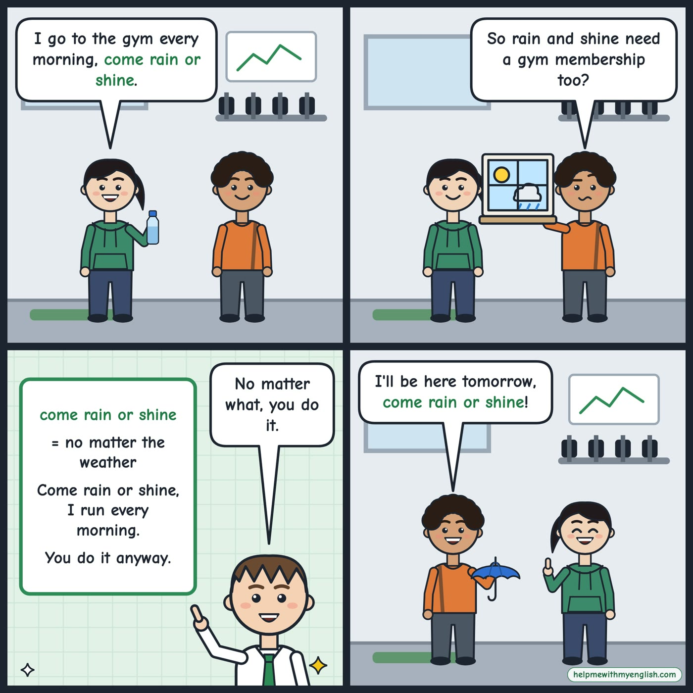

come rain or shine
No matter what the weather is like, or whatever happens.
Come rain or shine, I run in the park every morning.
Tip: Use it at the start or end of a sentence to say you will do something regardless of conditions: 'Come rain or shine, we'll be there.' It's often about commitment, so it fits promises and routines better than complaints.
Hear it in conversation
Workbook
1. What does it mean?
In this conversation, what does 'come rain or shine' mean?
2. Fill the gap
The market opens at seven every Sunday, , so the stallholders are always ready early.
3. Choose the best reply
Ken: Do you really go to the gym before work every single day?
4. Your turn: speak
Tell me about a habit or routine that you keep up no matter what.
Show an example answer
I walk to work every morning, come rain or shine. It clears my head before the day starts, so I don't like to skip it. Even in winter, I just put on warmer clothes and go.
Answer key: come rain or shine
- 1. A. Whatever the weather is like, Kofi will be there
- 2. come rain or shine
- 3. A. Yes, come rain or shine. It's the only time I have.
- 4. Example: I walk to work every morning, come rain or shine. It clears my head before the day starts, so I don't like to skip it. Even in winter, I just put on warmer clothes and go.
See it in a comic
